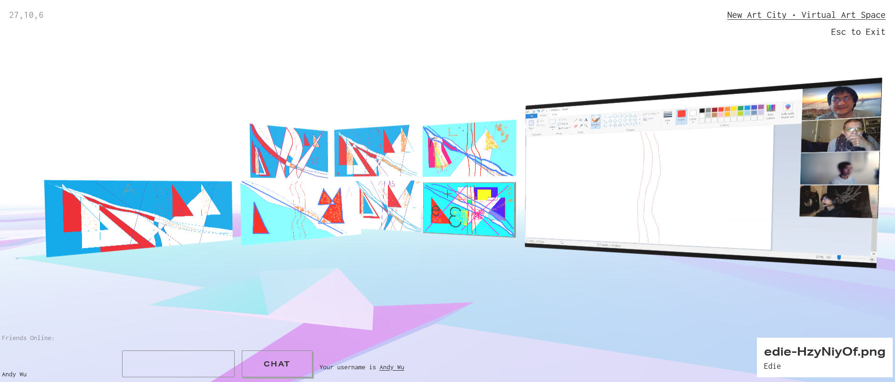
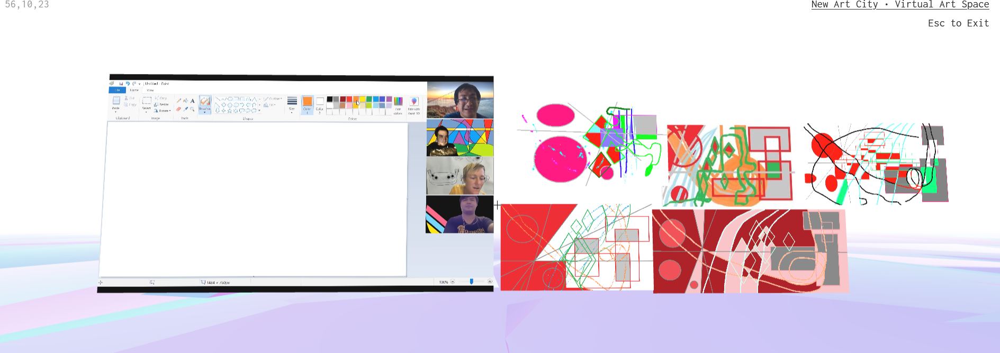
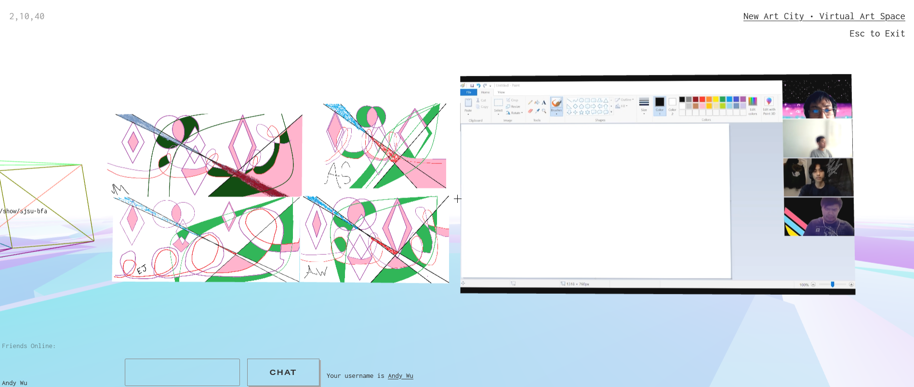
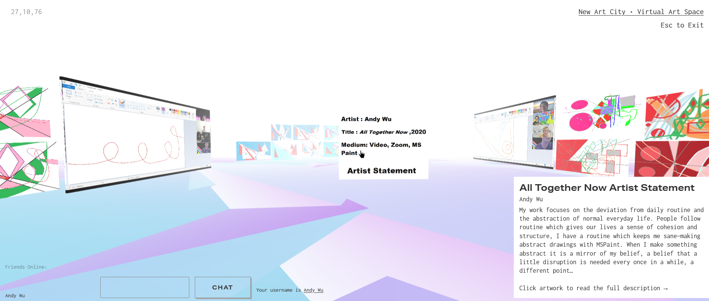

All Together Now




This piece is a live Zoom tutorial series where I guide people in making abstract paintings, where others are free to follow my lead and add their own touches. My practice of making these drawings in this year of 2020 is the basis for All Together Now. The phrase and action represents how we are all together even though we’re miles apart on our devices using the feature of our current predicament of COVID.
Zoom is the collective experience of software interface and digital community of 2020, just as MSPaint is a shared memory among early users of the internet , we are all together in painting. To participate, an online version of MSPaint was used using this url : https://jspaint.app/